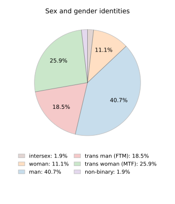
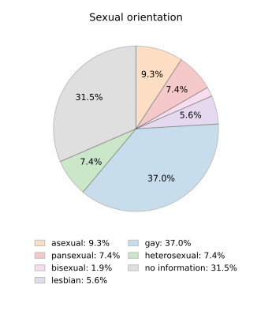
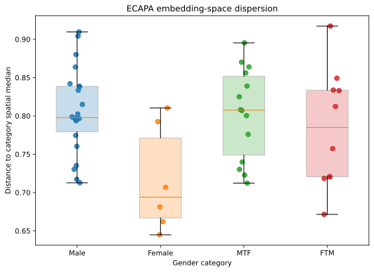

Corpus
CQC Release 1.0 contains about 10.5 hours of Mandarin speech from 54 speakers, drawn from public Bilibili and YouTube videos, transcribed and time-aligned at the level of words and individual speech sounds.
On this page: Key terms · Overview · Sources and inclusion · Metadata and annotation · Processing · Data quality · Statistics · Limitations · Releases
Key terms
This page uses a few technical terms. Each is explained once here.
| Speech corpus | A collection of recordings, organized and annotated for research. |
|---|---|
| Transcription | Writing down what is said in a recording, word for word. |
| Phone | A single speech sound, such as the m or the a in 妈 mā. |
| Forced alignment | Automatically marking where each word and each speech sound begins and ends in the recording. |
| TextGrid | The file format that stores these time marks; it opens in the free program Praat. |
| Speaker diarization | Automatically working out who is speaking when, in a recording with more than one speaker. |
| Pitch (F0) | How high or low a voice sounds. |
| Metadata | Information that describes the speakers, recordings, and corpus, rather than the speech itself. |
Overview
| Language | Mandarin Chinese, including regional varieties |
|---|---|
| Speakers | 54 |
| Speech | ≈10.5 hours |
| Sources | Public videos on Bilibili and YouTube |
| Speech genres | Interviews, podcasts, topical vlogs |
| Transcription | Automatic transcription (Whisper), reviewed by trained annotators |
| Time alignment | Word and phone level, produced automatically (Montreal Forced Aligner) and checked by hand, stored as Praat TextGrids |
| Identity metadata | Self-described only; separate fields for sex and gender identity, and sexual orientation |
| Access | Controlled, under the CQC Data Use Agreement |
| Documentation | Datasheet |
Units
- Speaker: an individual whose speech is represented in CQC, identified only by a CQC speaker ID.
- Source recording: the original public video.
- Session: the speech of one CQC speaker taken from one source recording. Genre is coded per session.
- Segment: a stretch of a session that is transcribed and aligned.
A speaker may contribute several sessions. Report speakers, sessions, and segments separately in analyses.
Sources and inclusion
Each speaker passed every step below. To protect speakers, we do not publish the names of channels or videos.
- Candidate discoverySearches on Bilibili and YouTube with Chinese and English terms for sexual and gender minority identities.
- Self-description screeningKept only speakers who explicitly described themselves as members of sexual or gender minority communities in their own videos or public profile.
- LanguageMandarin speech, including regional varieties; other Chinese languages such as Cantonese excluded.
- Recording qualityAt most two people speaking; no persistent background music, canned laughter, heavy noise, or heavy overlap.
- Speaker inclusionAt least five minutes of usable speech per speaker; only the target speaker’s speech is included.
Metadata and annotation
Gender identity, trans status, sex characteristics, and sexual orientation are different things, so each is recorded in its own field.
| Level | Field | Values |
|---|---|---|
| Speaker | Gender identity | woman, man, non-binary, other, not stated |
| Speaker | Trans status | trans, cis, not stated |
| Speaker | Sex characteristics | intersex, not stated |
| Speaker | Sexual orientation | gay, lesbian, bisexual, pansexual, asexual, heterosexual, other, not stated |
| Speaker | Mandarin variety | only if self-stated |
| Session | Speech genre | highly scripted, in-between, spontaneous |
| Session | Recording conditions | indoor / outdoor; number of speakers (1 or 2) |
| Segment | Transcription and alignment | Chinese characters; word and phone boundaries |
Processing
- Audio preparationRecordings converted to a single standard audio format (details in the datasheet).
- Separating speakersIn two-speaker recordings, speaker diarization (pyannote.audio) separated the two voices; segments assigned to the target speaker were checked by hand.
- TranscriptionSpeech transcribed automatically with Whisper, then reviewed by trained annotators.
- Text clean-upTranscripts converted to simplified characters; punctuation removed.
- Time alignmentForced alignment with the Montreal Forced Aligner marked the start and end of each word and phone, producing Praat TextGrids; the boundaries were then checked by hand.
Data quality
| Step | What was checked | What to keep in mind |
|---|---|---|
| Speaker separation | Target-speaker segments checked by hand. | Very short turns may still be misassigned. |
| Transcription | All 5,183 segments reviewed by trained annotators; 64.2% of automatic transcripts were accepted without change. | Reviewed transcripts can still contain errors, especially in mixed Chinese–English speech. |
| Time alignment | Produced automatically, then checked by hand. | Checked boundaries can still contain small errors; check them if your analysis relies on precise timing. |
Further details are in the datasheet. Processing scripts are available on request.
Statistics
Identity figures are based on how speakers described themselves, not on categories assigned by researchers.
Speech duration
Speech genre
In-between: planned or topic-guided speech that was not read from a prepared script.
Sex, gender, and sexuality


Speaker embeddings

Other figures
- 92.6% of speakers were recorded indoors.
To reduce the risk of identifying individual speakers, we do not publish detailed combinations of identity and Mandarin variety.
Limitations
CQC includes speakers who met the inclusion criteria and who published relevant content on two video platforms. Who ends up in the corpus is therefore shaped by platform use, by who chooses to speak publicly, by the search terms used, and by recording quality. Report sample composition, group sizes, and limitations, and interpret results with care.
- Representation. Cis women, bisexual, non-binary, intersex, and older speakers are few.
- Platforms. Bilibili and YouTube users are not representative of Mandarin speakers in general.
- Publicness. CQC includes only people willing to speak publicly online about their identity.
- Genre. Most speech is in-between; highly scripted and spontaneous speech are limited.
- Geography. Speakers’ regional backgrounds are uneven and often not stated.
- Self-presentation. Public videos involve deliberate self-presentation for an audience, and speakers may adjust what they say to platform rules.
- Labels. Local identity labels do not always correspond to English categories; analytic categories simplify them.
- Time. Online speech and identity vocabulary change; recordings reflect when they were made.
- Recording conditions. Microphones, rooms, and compression vary, as in any collection of online media.
Releases
Material may be removed between releases at speakers’ request. Always cite the release you used.
| Release | Date | Speakers | Hours | Changes |
|---|---|---|---|---|
| 1.0 | October 2026 | 54 | ≈10.5 | First release |